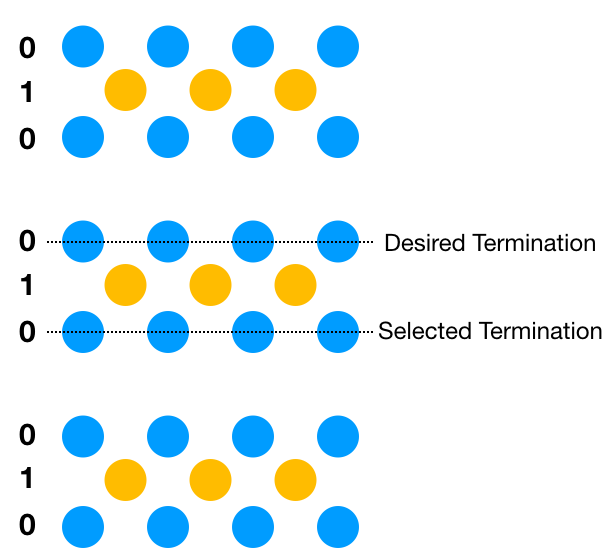

Slab Calculation¶
chinook facilitates the generation of slab-models based around bulk Hamiltonians defined by the user. This functionality is in beta-testing mode for version 1.0. so please proceed with caution, and contact the developers if you have any concerns.
The setup for a slab-type calculation proceeds similarly to that for a bulk model. The call to build a tight-binding model passes an additional argument,
TB = chinook.build_lib.gen_TB(basis_dict,hamiltonian_dict,K_object,slab_dict)
The slab_dict formats as follows.
slab_dict = { 'avec':avec,
'miller':np.array([0,0,1]),
'thick':30,
'vac':20,
'termination':(0,0),
'fine':(0,0)}
Here one passes the lattice vectors avec, along with the desired Miller index of the surface termination. A desired thickness of both the slab and the vacuum buffer are also required. These are in units of Angstrom. This defines a lower bound: to find a suitable slab which satisfies the desired atomic termination, the actual slab can often be larger. The vac should be at very least longer than the farthest hopping vector considered in the model. This doesn’t add any computational overhead after the definition of the slab model is established, so a large value is not a serious bottleneck in subsequent calculations.
The termination tuple designates which inequivalent atoms in the basis one wants to have on the top and bottom surface. If a mixed-character surface (e.g. TiO2 plane) is desired, either species can be selected. Finally the fine tuple allows user to adjust the position of the termination, which can be necessary in the event of incorrect software selection of surface. This can occur commonly in layered materials, for example below for a AB2 material: while a real material will generally terminate at the bottom of the van-der Waals layer, either instance of atom 0 can satisfy the slab_dict input. This is indicated in the figure:
{kind=link}
Fine allows the user to request a shift of designated thickness to force the program to select the proper surface termination. As slab is in beta development, some diagnostics of the generated slab should be conducted by the user before proceeding with more complex calculations.
Warning
Slab generation will rotate the global coordinate frame to place the surface normal along the \(\hat z\) direction, and one of the in-plane vectors along the \(\hat x\) direction. This may lead to unanticipated redirection of the high-symmetry points.
Slab Library¶
-
slab.GCD(a, b)¶ Basic greatest common denominator function. First find all divisors of each a and b. Then find the maximal common element of their divisors.
args:
- a, b: int
return:
- int, GCD of a, b
-
slab.H_conj(h)¶ Conjugate hopping path
args:
- h: list, input hopping path in format [i,j,x,y,z,Hij]
return:
- list, reversed hopping path, swapped indices, complex conjugate of the
hopping strength
-
slab.H_surf(surf_basis, avec, H_bulk, Rmat, lenbasis)¶ Rewrite the bulk-Hamiltonian in terms of the surface unit cell, with its (most likely expanded) basis. The idea here is to organize all ‘duplicate’ orbitals, in terms of their various connecting vectors. Using modular arithmetic, we then create an organized dictionary which categorizes the hopping paths within the new unit cell according to the new basis index designation. For each element in the Hamiltonian then, we can do the same modular definition of the hopping vector, easily determining which orbital in our new basis this hopping path indeed corresponds to. We then make a new list, organizing corresponding to the new basis listing.
args:
- surf_basis: list of orbitals in the surface unit cell
- avec: numpy array 3x3 of float, surface unit cell vectors
- H_bulk: H_me object(defined in chinook.TB_lib.py), as
the bulk-Hamiltonian
- Rmat: 3x3 numpy array of float, rotation matrix
(pre-multiply vectors) for rotating the coordinate system from bulk to surface unit cell axes
- lenbasis: int, length of bulk basis
return:
- Hamiltonian object, written in the basis of the surface unit cell,
and its coordinate frame, rather than those of the bulk system
-
slab.Hobj_to_dict(Hobj, basis)¶ Associate a list of matrix elements with each orbital in the original basis. The hopping paths are given not as direct units,but as number of unit-vectors for each hopping path. So the actual hopping path will be:
np.dot(H[2:5],svec)+TB.basis[j].pos-TB.basis[i].posThis facilitates determining easily which basis element we are dealing with. For the slab, the new supercell will be extended along the 001 direction. So to redefine the orbital indices for a given element, we just take [i, len(basis)*(R_2)+j, (np.dot((R_0,R_1,R_2),svec)+pos[j]-pos[i]),H] If the path goes into the vacuum buffer don’t add it to the new list!
args:
- Hobj: H_me object(defined in chinook.TB_lib.py), as
the bulk-Hamiltonian
- basis: list of orbital objects
return:
- Hdict: dictionary of hopping paths associated with a given orbital
index
-
slab.LCM(a, b)¶ Basic lowest-common multiplier for two values a,b. Based on idea that LCM is just the product of the two input, divided by their greatest common denominator.
args:
- a, b: int
return:
- int, LCM of a and b
-
slab.LCM_3(a, b, c)¶ For generating spanning vectors, require lowest common multiple of 3 integers, itself just the LCM of one of the numbers, and the LCM of the other two.
args:
- a, b, c: int
return:
int, LCM of the three numbers
-
slab.abs_to_frac(avec, vec)¶ - Quick function for taking a row-ordered matrix of lattice vectors:
- a_11 a_12 a_13 |a_21 a_22 a_23 |a_31 a_32 a_33 |
and using it to transform a vector, written in absolute units, to fractional units. Note this function can be used to broadcast over N vectors you would like to transform
args:
- avec: numpy array of 3x3 float lattice vectors, ordered by rows
- vec: numpy array of Nx3 float, vectors to be transformed to
fractional coordinates
return:
- Nx3 array of float, vectors translated into basis of lattice vectors
-
slab.basal_plane(vvecs)¶ Everything is most convenient if we redefine the basal plane of the surface normal to be oriented within a Cartesian plane. To do so, we take the v-vectors. We get the norm of v1,v2 and then find the cross product with the z-axis, as well as the angle between these two vectors. We can then rotate the surface normal onto the z-axis. In this way we conveniently re-orient the v1,v2 axes into the Cartesian x,y plane.
args:
- vvecs: numpy array 3x3 float
return:
- vvec_prime: numpy array 3x3 of float, rotated v vectors
- Rmat: numpy array of 3x3 float, rotation matrix to send original
coordinate frame into the rotated coordinates.
-
slab.build_slab_H(Hsurf, slab_basis, surf_basis, svec)¶ Build a slab Hamiltonian, having already defined the surface-unit cell Hamiltonian and basis. Begin by creating a dictionary corresponding to the Hamiltonian matrix elements associated with the relevant surface unit cell orbital which pairs with our slab orbital, and all its possible hoppings in the original surface unit cell. This dictionary conveniently redefines the hopping paths in units of lattice vectors between the relevant orbitals. In this way, we can easily relabel a matrix element by the slab_basis elements, and then translate the connecting vector in terms of the pertinent orbitals.
If the resulting element is from the lower diagonal, take its conjugate. Finally, only if the result is physical, i.e. corresponds to a hopping path contained in the slab, and not e.g. extending into the vacuum, should the matrix element be included in the new Hamiltonian. Finally, the new list Hnew is made into a Hamiltonian object, as always, and duplicates are removed.
args:
- Hsurf: H_me object(defined in chinook.TB_lib.py), as
the bulk-Hamiltonian from the surface unit cell
- slab_basis: list of orbital objects, slab unit cell basis
- surf_basis: list of orbital objects, surface unit cell basis
- svec: numpy array of 3x3 float, surface unit cell lattice vectors
return:
- list of Hamiltonian matrix elements in [i,j,x,y,z,Hij] format
-
slab.bulk_to_slab(slab_dict)¶ Wrapper function for generating a slab tight-binding model, having established a bulk model.
args:
- slab_dict: dictionary containing all essential information
regarding the slab construction:
- ‘miller’: numpy array len 3 of int, miller indices
- ‘TB’: Tight-binding model corresponding to the bulk model
- ‘fine’: tuple of 2 float. Fine adjustment of the slab limits,
beyond the termination to precisely indicate the termination. units of Angstrom, relative to the bottom, and top surface generated
- ‘thick’: float, minimum thickness of the slab structure
- ‘vac’: float, minimum thickness of the slab vacuum buffer
to properly generate a surface with possible surface states
- ‘termination’: tuple of 2 int, specifying the basis indices
for the top and bottom of the slab structure
return:
- slab_TB: tight-binding TB object containing the slab basis
- slab_ham: Hamiltonian object, slab Hamiltonian
- Rmat: numpy array of 3x3 float, rotation matrix
-
slab.divisors(a)¶ Iterate through all integer divisors of integer input
args:
- a: int
return:
list of int, divisors of a
-
slab.frac_inside(points, avec)¶ Use fractional coordinates to determine whether a point is inside the new unit cell, or not. This is a very simple way of establishing this point, and circumvents many of the awkward rounding issues of the parallelepiped method I have used previously. Ultimately however, imprecision of the matrix multiplication and inversion result in some rounding error which must be corrected for. To do this, the fractional coordinates are rounded to the 4th digit. This leads to a smaller uncertainty by over an order to 10^3 than each rounding done on the direct coordinates.
args:
- points: numpy array of float (Nx4) indicating positions and basis indices of the points to consider
- avec: numpy array of 3x3 float, new lattice vectors
return:
- numpy array of Mx4 float, indicating positions and basis indices of the valid basis elements inside the new
unit cell.
-
slab.frac_to_abs(avec, vec)¶ Same as abs_to_frac, but in opposite direction,from fractional to absolute coordinates
args:
- avec: numpy array of 3x3 float, lattice vectors, row-ordered
- vec: numpy array of Nx3 float, input vectors
return:
- N x 3 array of float, vec in units of absolute coordinates (Angstrom)
-
slab.gen_slab(basis, vn, mint, minb, term, fine=(0, 0))¶ Using the new basis defined for the surface unit cell, generate a slab of at least mint (minimum thickness), minb (minimum buffer) and terminated by orbital term. In principal the termination should be same on both top and bottom to avoid inversion symmetry breaking between the two lattice terminations. In certain cases, mint,minb may need to be tuned somewhat to get exactly the surface terminations you want.
args:
- basis: list of instances of orbital objects
- vn: numpy array of 3x3 float, surface unit cell lattice vectors
- mint: float, minimum thickness of the slab, in Angstrom
- minb: float, minimum thickness of the vacuum buffer, in Angstrom
- term: tuple of 2 int, termination of the slab tuple (term[0] = top termination, term[1] = bottom termination)
- fine: tuple of 2 float, fine adjustment of the termination to precisely specify terminating atoms
return:
- avec: numpy array of float 3x3, updated lattice vector for the SLAB unit cell
- new_basis: array of new orbital basis objects, with slab-index corresponding to the original basis indexing,
and primary index corresponding to the order within the new slab basis
-
slab.gen_surface(avec, miller, basis)¶ Construct the surface unit cell, to then be propagated along the 001 direction to form a slab
args:
- avec: numpy array of 3x3 float, lattice vectors for original unit cell
- miller: numpy array of 3 int, Miller indices indicating the surface orientation
- basis: list of orbital objects, orbital basis for the original lattice
return:
- new_basis: list of orbitals, surface unit cell orbital basis
- vn_b: numpy array of 3x3 float, the surface unit cell primitive lattice vectors
- Rmat: numpy array of 3x3 float, rotation matrix, to be used in post-multiplication order
-
slab.iszero(a)¶ Find where an iterable of numeric is zero, returns empty list if none found
args:
- a: numpy array of numeric
return:
- list of int, indices of iterable where value is zero
-
slab.mod_dict(surf_basis, av_i)¶ Define dictionary establishing connection between slab basis elements and the bulk Hamiltonian. The slab_indices relate to the bulk model, we can then compile a list of slab orbital pairs (along with their connecting vectors) which should be related to a given bulk model hopping. The hopping is expressed in terms of the number of surface lattice vectors, rather than direct units of Angstrom.
args:
- surf_basis: list of orbital objects, covering the slab model
- av_i: numpy array of 3x3 float, inverse of the lattice vector matrix
return:
- cv_dict: dictionary with key-value pairs of
slab_index[i]-slab_index[j]:numpy.array([[i,j,mod_vec]…])
-
slab.nonzero(a)¶ Find where an iterable of numeric is non-zero, returns empty list if none found
args:
- a: numpy array of numeric
return:
- list of int, indices of iterable where value is non-zero
-
slab.p_vecs(miller, avec)¶ Produce the vectors p, as defined by Ceder, to be used in defining spanning vectors for plane normal to the Miller axis
args:
- miller: numpy array of len 3 float
- avec: numpy array of size 3x3 of float
return:
- pvecs: numpy array size 3x3 of float
-
slab.par(avec)¶ Definition of the parallelepiped, as well as a containing region within the Cartesian projection of this form which can then be used to guarantee correct definition of the new cell basis. The parallelipiped is generated, and then its extremal coordinates established, from which a containing parallelepiped is then defined.
args:
- avec: numpy array of 3x3 float
return:
- vert: numpy array 8x3 float vertices of parallelepiped
- box_pts: numpy array 8 x 3 float vertices of containing box
-
slab.populate_box(box, basis, avec, R)¶ Populate the bounding box with points from the original lattice basis. These represent candidate orbitals to populate the surface-projected unit cell.
args:
- box: numpy array of 8x3 float, vertices of corner of a box
- basis: list of orbital objects
- avec: numpy array of 3x3 float, lattice vectors
- R: numpy array of 3x3 float, rotation matrix
return:
- basis_full: list of Nx4 float, representing instances of orbitals copies,
retaining only their position and their orbital basis index. These orbitals fill a container box larger than the region of interest.
-
slab.populate_par(points, avec)¶ Fill the box with basis points, keeping only those which reside in the new unit cell.
args:
- points: numpy array of Nx4 float ([:3] give position, [3] gives index)
- avec: numpy array of 3x3 float
return:
- new_points: Nx3 numpy array of float, coordinates of new orbitals
- indices: Nx1 numpy array of float, indices in original basis
-
slab.region(num)¶ Generate a symmetric grid of points in number of lattice vectors.
args:
- num: int, grid will have size 2 num+1 in each direction
return:
- numpy array of size ((2 num+1)^3,3) with centre value of first entry of
(-num,-num,-num),…,(0,0,0),…,(num,num,num)
-
slab.sorted_basis(pts, inds)¶ Re-order the elements of the new basis, with preference to z-position followed by the original indexing
args:
- pts: numpy array of Nx3 float, orbital basis positions
- inds: numpy array of N int, indices of orbitals, from original basis
return:
- labels_sorted: numpy array of Nx4 float, [x,y,z,index], in order of increasing z, and index
-
slab.unpack(Ham_obj)¶ Reduce a Hamiltonian object down to a list of matrix elements. Include the Hermitian conjugate terms
args:
- Ham_obj: Hamiltonian object, c.f. chinook.TB_lib.H_me
return:
- Hlist: list of Hamiltonian matrix elements
-
slab.v_vecs(miller, avec)¶ Wrapper for functions used to determine the vectors used to define the new, surface unit cell.
args:
- miller: numpy array of 3 int, Miller indices for surface normal
- avec: numpy array of 3x3 float, Lattice vectors
return:
- vvecs: new surface unit cell vectors numpy array of 3x3 float
Surface Vector¶
-
surface_vector.ang_v1v2(v1, v2)¶ Find angle between two vectors:
args:
- v1: numpy array of 3 float
- v2: numpy array of 3 float
return:
- float, angle between the vectors
-
surface_vector.are_parallel(v1, v2)¶ Determine if two vectors are parallel:
args:
- v1: numpy array of 3 float
- v2: numpy array of 3 float
return:
- boolean, True if parallel to within 1e-5 radians
-
surface_vector.are_same(v1, v2)¶ Determine if two vectors are identical
args:
- v1: numpy array of 3 float
- v2: numpy array of 3 float
return:
- boolean, True if the two vectors are parallel and have same
length, both to within 1e-5
-
surface_vector.find_v3(v1, v2, avec, maxlen)¶ Find the best out-of-plane surface unit cell vector. While we initialize with a fixed cutoff for maximum length, to avoid endless searching, we can slowly increase on each iteration until a good choice is possible.
args:
- v1, v2: numpy array of 3 float, in plane spanning vectors
- avec: numpy array of 3x3 float, bulk lattice vectors
- maxlen: float, max length tolerated for the vector we seek
return:
- v3_choice: the chosen unit cell vector
-
surface_vector.initialize_search(v1, v2, avec)¶ Seed search for v3 with the nearest-neighbouring Bravais latice point which maximizes the projection out of plane of that spanned by v1 and v2.
args:
- v1, v2: numpy array of 3 float, the spanning vectors for plane
- avec: numpy array of 3x3 float
return:
- numpy array of 3 float, the nearby Bravais lattice point which
maximizes the projection along the plane normal
-
surface_vector.refine_search(v3i, v1, v2, avec, maxlen)¶ Refine the search for the optimal v3–supercell lattice vector which both minimizes its length, while maximizing orthogonality with v1 and v2
args:
- v3i: numpy array of 3 float, initial guess for v3
- v1: numpy array of 3 float, in-plane supercell vector
- v2: numpy array of 3 float, in-plane supercell vector
- avec: numpy array of 3x3 float, bulk lattice vectors
- maxlen: float, upper limit on how long of a third vector we can
reasonably tolerate. This becomes relevant for unusual Miller indices.
return:
- v3_opt list of numpy array of 3 float, list of viable options for
the out of plane surface unit cell vector
-
surface_vector.score(vlist, v1, v2, avec)¶ To select the ideal out-of-plane surface unit cell vector, score the candidates based on both their length and their orthogonality with respect to the two in-plane spanning vectors. The lowest scoring candidate is selected as the ideal choice.
args:
- vlist: list of len 3 numpy array of float, choices for out-of-plane
vector
- v1, v2: numpy array of 3 float, in plane spanning vectors
- avec: numpy array of 3x3 float, primitive unit cell vectors
return:
- numpy array of len 3, out of plane surface-projected lattice vector
-
v3find.ang_v1v2(v1, v2)¶ Find angle between two vectors, rounded to floating point precision.
args:
- v1: numpy array of N float
- v2: numpy array of N float
return:
- float, angle in radians
-
v3find.are_parallel(v1, v2)¶ Are two vectors parallel?
args:
- v1: numpy array of N float
- v2: numpy array of N float
return:
- boolean, True if parallel, to within 1e-5 radians, False otherwise
-
v3find.are_same(v1, v2)¶ Are two vectors identical, i.e. parallel and of same length, to within the precision of are_parallel?
args:
- v1: numpy array of N float
- v2: numpy array of N float
return:
- boolean, True if identical, False otherwise.
-
v3find.find_v3(v1, v2, avec, maxlen)¶ Wrapper function for finding the surface vector.
args:
- v1: numpy array of 3 float, a spanning vector of the plane
- v2: numpy array of 3 float, a spanning vector of the plane
- avec: numpy array of 3x3 float
- maxlen: float, longest accepted surface vector
return:
- numpy array of 3 float, surface vector choice
-
v3find.initialize_search(v1, v2, avec)¶ Seed search for v3 with the nearest-neighbouring Bravais latice point which maximizes the projection out of plane of that spanned by v1 and v2
args:
- v1: numpy array of 3 float, a spanning vector of the plane
- v2: numpy array of 3 float, a spanning vector of the plane
- avec: numpy array of 3x3 float
return:
- numpy array of float, the nearby Bravais lattice point which maximizes
the projection along the plane normal
-
v3find.refine_search(v3i, v1, v2, avec, maxlen)¶ Refine the search for the optimal v3 which both minimalizes the length while maximizing orthogonality to v1 and v2
args:
- v3i: numpy array of 3 float, initial guess for the surface vector
- v1: numpy array of 3 float, a spanning vector of the plane
- v2: numpy array of 3 float, a spanning vector of the plane
- avec: numpy array of 3x3 float
- maxlen: float, longest vector accepted
return:
v3_opt: list of numpy array of 3 float, options for surface vector
-
v3find.score(vlist, v1, v2, avec)¶ The possible surface vectors are scored based on their legnth and their orthogonality to the in-plane vectors.
args:
- vlist: list fo numpy array of 3 float, options for surface vector
- v1: numpy array of 3 float, a spanning vector of the plane
- v2: numpy array of 3 float, a spanning vector of the plane
- avec: numpy array of 3x3 float
return:
- numpy array of 3 float, the best scoring vector option